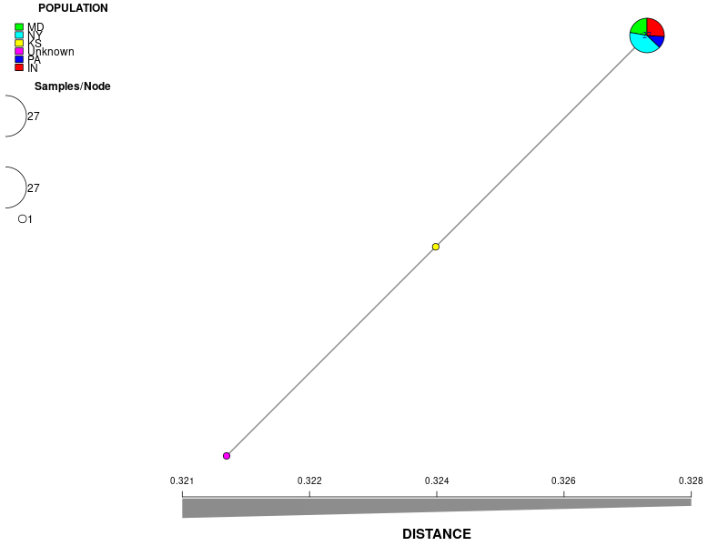

| sample_id | shortread_1 | shortread_2 | reference | reference_id | report_group | color_by | date_isolated | date_received | year | host | cv_key | nursery |
|---|---|---|---|---|---|---|---|---|---|---|---|---|
| 22-299 | test/data/reads/22-299_R1.fastq.gz | test/data/reads/22-299_R2.fastq.gz | xan_test;subgroup | year;nursery | 3/2/22 | 3/29/22 | 2022 | Pelargonium x hortorum | CV-1 | MD | ||
| 22-300 | test/data/reads/22-300_R1.fastq.gz | test/data/reads/22-300_R2.fastq.gz | xan_test;subgroup | year;nursery | 3/2/22 | 3/30/22 | 2022 | Pelargonium x hortorum | CV-2 | MD | ||
| 22-301 | test/data/reads/22-301_R1.fastq.gz | test/data/reads/22-301_R2.fastq.gz | xan_test;subgroup | year;nursery | 3/2/22 | 3/31/22 | 2022 | Pelargonium x hortorum | CV-3 | MD | ||
| 22-302 | test/data/reads/22-302_R1.fastq.gz | test/data/reads/22-302_R2.fastq.gz | xan_test;subgroup | year;nursery | 3/2/22 | 4/1/22 | 2022 | Pelargonium x hortorum | CV-4 | MD | ||
| 22-303 | test/data/reads/22-303_R1.fastq.gz | test/data/reads/22-303_R2.fastq.gz | xan_test;subgroup | year;nursery | 3/2/22 | 4/2/22 | 2022 | Pelargonium x hortorum | CV-5 | MD | ||
| 22-304 | test/data/reads/22-304_R1.fastq.gz | test/data/reads/22-304_R2.fastq.gz | xan_test;subgroup | year;nursery | 3/7/22 | 4/3/22 | 2022 | Pelargonium x hortorum | CV-6 | MD |
Tutorial
This example uses sequencing reads from an outbreak of Xanthomonas hortorum in several plant nurseries. For the sake of this example, we’ll treat the pathogen as an unknown and use the pathogensurveillance pipeline to help determine its identity. We’ll also explore how isolates from different nursery populations relate to each other and the reference sequences of other closely-related organisms. This information can be obtained from several plots that the pathogensurveillance pipeline generates automatically.
Sample input
The pipeline is designed to work with a wide variety of existing metadata sheets without extensive changes. Here’s a look at “xanthomonas.csv”, which serves as the only unique input file within the command to run the pipeline:
There is quite a bit of information in this file, but only a few columns are essential (and can be in any order). The input csv needs show the pipeline where to find the sequencing reads. These can be present either locally or they can be downloaded.
Using local reads: Columns “shortread_1” and “shortread_2” specify the path to forward and reverse reads. Each row corresponds to one individual sample. Reads for this tutorial are hosted on the pathogensurveilance github repo. They are derived from paired-end illumina shortreads, but the pipeline will also work with mixed inputs of Pacbio or Oxford Nanopore sequences.
Downloading reads: Sequence files may instead be hosted on the ncbi. In that case, the “shortread_1/shortread_2” columns should be substituted with a single “SRA” column, and they will be downloaded from the ncbi automatically. See test/data/metadata/xanthomonas.csv for an example using this input format.
Specifying a reference genome (optional): The “reference_refseq” column may be useful when you are relatively confident as to the identity of your samples and would like to include one particular reference for comparison. See Documentation for an in-depth explanation of how to designate mandatory and optional references.
Assigning sample groups (optional): The optional column “color_by” is used for data visualization. It will assign one or more columns to serve as grouping factors for the output report. Here, samples will be grouped by the values of the “year” and “nursery” columns. Note that multiple factors need to be separated by semicolons within the color_by column.
Running the pipeline
Here is the full command used execute this example, using a docker container:
nextflow run nf-core/pathogensurveillance --input https://raw.githubusercontent.com/grunwaldlab/pathogensurveillance/master/test/data/metadata/xanthomonas.csv --outdir xanthomonas --download_bakta_db true -profile docker -resume --max_cpus 8 --max_memory 30GB -resumeWhen running your own analysis, you will need to provide your own path to the input CSV file.
By default, the pipeline will run on 128 GB of RAM and 16 threads. This is more resources than is strictly necessary and beyond the capacity of most desktop computers. We can scale this back a bit for this lightweight test run. This analysis will work with 8 cpus and 30 GB of RAM (albeit more slowly), which is specified by the –max_cpus and –max_memory settings.
The setting -resume is only necessary when resuming a previous analysis. However, it doesn’t hurt to include it at the start. If the pipeline is interrupted, this setting allows progress to pick up where it left off – as long as the previous command is executed from the same working directory.
If the pipeline begins successfully, you should see a screen tracking your progress:
[25/63dcee] process > PATHOGENSURVEILLANCE:INPUT_CHECK:SAMPLESHEET_CHECK (xanthomonas.csv)[100%] 1 of 1
[- ] process > PATHOGENSURVEILLANCE:SRATOOLS_FASTERQDUMP -
[- ] process > PATHOGENSURVEILLANCE:DOWNLOAD_ASSEMBLIES -
[- ] process > PATHOGENSURVEILLANCE:SEQKIT_SLIDING -
[- ] process > PATHOGENSURVEILLANCE:FASTQC -
[- ] process > PATHOGENSURVEILLANCE:COARSE_SAMPLE_TAXONOMY:BBMAP_SENDSKETCH -The input and output of each process can be accessed from the work/ directory. The subdirectory within work/ is designated by the string to left of each step. Note that this location will be different each time the pipeline is run, and only the first part of the name of the subdirectory is shown. For this run, we could navigate to work/25/63dcee(etc) to access the input csv that is used for the next step.
Report
You should see a message similar to this if the pipeline finishes successfully:
-[nf-core/plantpathsurveil] Pipeline completed successfully-
To clean the cache, enter the command:
nextflow clean evil_boyd -f
Completed at: 20-May-2024 12:44:40
Duration : 3h 29m 2s
CPU hours : 15.2
Succeeded : 253The final report can be viewed as either a .pdf or .html file. It can be accessed inside the reports folder of the output directory (here: xanthomonas/reports). This report shows several key pieces of information about your samples.
A note on storage management - pathogensurveillance creates a large number of intermediate files. For most users we recommend clearing these files after each run. To do so, run the script shown after the completion message (nextflow clean
This particular report has been included as an example under test/sample_reports/xanthomonas.
Summary:
- Pipeline Status Report: error messages for samples or sample groups
- Input Data: Data read from the input .csv file
Identification:
Initial identification: Coarse identification from the bbmap sendsketch step. The first tab shows best species ID for each sample. The second tab shows similarity metrics between sample sequences and other reference genomes: %ANI (average nucleotide identity), %WKID (weighted kmer identity), and %completeness.
- For more information about each metric, click the About this table tab underneath.
Most similar organisms: Shows relationships between samples and references using % ani and % pocp (percentage of conserved proteins). For better resolution, you can interactively zoom in/out of plots.
**Phylogenetic context** Core gene phylogeny: A core gene phylogeny uses the sequences of all gene shared by all of the genomes included in the tree to infer evolutionary relationships. It is the most robust identification provided by this pipeline, but its precision is still limited by the availability of similar reference sequences. Methods to generate this tree differ between prokaryotes and eukaryotes. Our input to the pipeline was prokaryotic DNA sequences, and the method to build this tree is based upon many different core genes shared between samples and references (for eukaryotes, this is constrained to BUSCO genes). This tree is built with iqtree and based upon shared core genes analyzed using the program pirate. You can highlight branches by hovering over and clicking on nodes.
SNP trees
- This tree is better suited for visualizing the genetic diversity among samples. However, the core gene phylogeny provides a much better source of information for evolutionary differences among samples and other known references.
Minimum spanning network

Minimum spanning network: The nodes represent unique multilocus genotypes, and the size of nodes is proportional to the # number of samples that share the same genotype. The edges represent the SNP differences between two given genotypes, and the darker the color of the edges, the fewer SNP differences between the two.